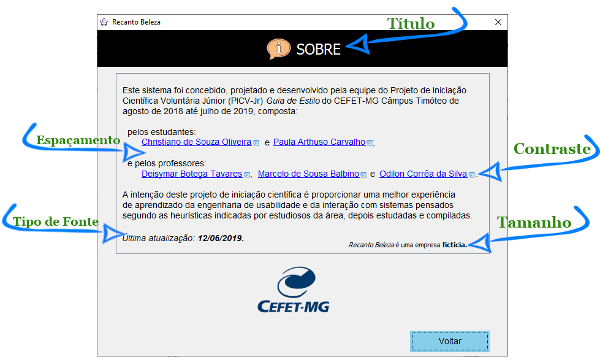

Guia de Estilo
Início
Desktop
(current)
Web
Sobre
Diretrizes Gerais
Layout
• Fonte (Letras)
Componentes
Janelas
Formulários
Caixas de Diálogo
Caixas de Mensagem
Modelos de Interface
Login
Tela Principal
CRUD
Pesquisa
Mestre-Detalhe
Pagamento
Relatório
Gráfico
Diretrizes de Fonte (Letras)
Clique nas setas na tela abaixo para receber orientações sobre cada aspecto da fonte:

Tela de Sobre segue as diretrizes de fonte.